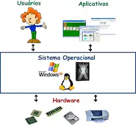
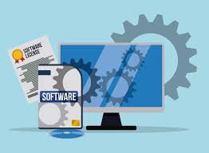
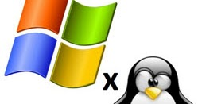
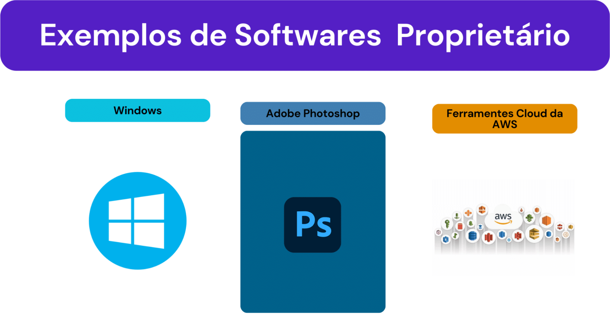
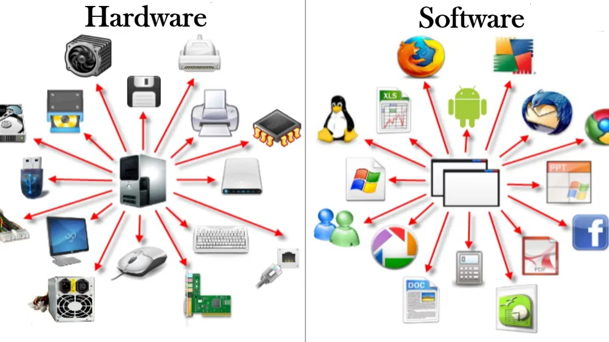
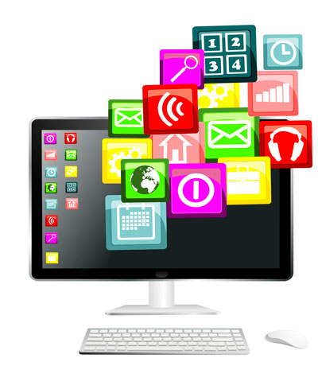
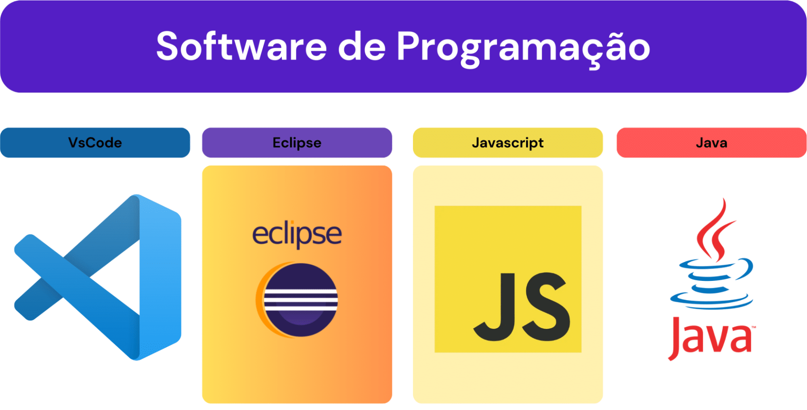
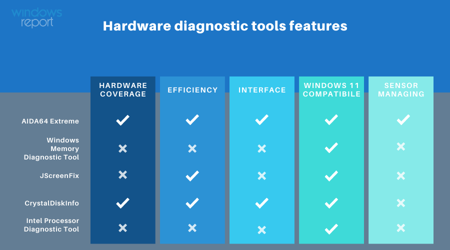

O que é um software?

Software é o conjunto de instruções que permite que dispositivos eletrônicos, como celulares e computadores, realizem tarefas. Ele faz a ponte entre o usuário e o hardware, garantindo que tudo funcione como esperado. Existem softwares que atuam nos bastidores, como os sistemas operacionais, e outros usados diretamente pelas pessoas, como aplicativos, jogos, navegadores e editores de texto.
O que é um sistema operacional?
Um sistema operacional (SO) é o software que gerencia os recursos de hardware de um dispositivo, como processador, memória e periféricos. Ele fornece uma interface para a execução de outros aplicativos, facilitando a interação do usuário com a máquina. Existem diferentes tipos de sistemas operacionais, como desktop, móveis, servidores, embarcados e tempo real. Alguns exemplos populares são o Windows, macOS e Linux para computadores pessoais, enquanto o Android e o iOS são líderes em dispositivos móveis.
O que é uma licença de software?

Os recursos e serviços digitais tornaram-se indispensáveis para que empresas de qualquer segmento desempenhem suas atividades com sucesso e consigam superar a concorrência. A gestão de Tecnologia da Informação (TI) existe justamente para garantir que os recursos tecnológicos sejam usados de forma segura, funcional e lucrativa – e o licenciamento de software é parte essencial desta estratégia.
O que é um Software Licenciado?
Licença de software é o documento que define os limites de uso que um usuário pode ter em relação a um produto de terceiros. A origem do termo remonta ao uso de imagem e de som, como compreendido pelo Direito, e pode restringir a cópia, a distribuição e a adaptação da aplicação. Existem várias categorias de licenças de software, desde as menos restritivas (software livre, software de código aberto, copyleft etc.) até as proprietárias.
O que é um Software livre?
Por “software livre” devemos entender aquele software que respeita a liberdade e senso de comunidade dos usuários. Grosso modo, isso significa que os usuários possuem a liberdade de executar, copiar, distribuir, estudar, mudar e melhorar o software. Assim sendo, “software livre” é uma questão de liberdade, não de preço. Para entender o conceito, pense em “liberdade de expressão”, não em “cerveja grátis”. Por vezes chamamos de “libre software” para mostrar que livre não significa grátis, pegando emprestado a palavra em francês ou espanhol para “livre”, para reforçar o entendimento de que não nos referimos a software como grátis.
O que é um Software Proprietário?
Software proprietário, também conhecido como software de código fechado, é um software de propriedade privada e restrito por seu criador ou editor. O código fonte do software proprietário não é compartilhado com o público, o que significa que os usuários não podem visualizá-lo, modificá-lo ou distribuí-lo.
O que é um software de Sistema?
Software de sistema é um tipo de programa de computador projetado para executar o hardware e os aplicativos de um computador. Considerando o sistema de computador como um modelo em camadas, o software de sistema é a interface entre o hardware e os aplicativos do usuário. O sistema operacional ( SO ) é o exemplo mais conhecido de software de sistema. O SO gerencia todos os outros programas em um computador. O software de sistema é usado para gerenciar as funções básicas de um computador, incluindo o sistema operacional de disco , o software utilitário de gerenciamento de arquivos, os sistemas operacionais e os softwares e hardwares de aplicativos. Ele é executado em segundo plano, mantendo as funções básicas do computador para que os usuários possam executar softwares de aplicativos de nível superior para executar determinadas tarefas.
O que é um software Aplicativo?
Um software aplicativo, ou simplesmente aplicativo, é um programa de computador desenvolvido para realizar uma tarefa específica, geralmente voltada para o usuário final. Existem aplicativos para realizar uma ampla variedade de tarefas, como edição de texto, edição de imagens, gerenciamento financeiro, jogos, comunicação, entre outros — e irei falar mais sobre esses tipos mais à frente.
O que é um software de Programação?
O software é uma sequência de instruções a serem seguidas e executadas por um mecanismo. Ele possibilita a uma máquina/computador executar tarefas específicas após os comandos do usuário. É categorizado como a parte lógica e imaterial, cuja finalidade é fornecer orientações ao hardware. A palavra software também pode ser definida como os programas, dados e instruções que regem o funcionamento de um computador, smartphone, tablet e demais dispositivos eletrônicos.
O que é um software de diagnóstico software ?
O software de diagnóstico é uma ferramenta tecnológica projetada para auxiliar profissionais de saúde na análise e interpretação de dados clínicos. Ele integra informações de exames laboratoriais, imagens médicas e outros dados relevantes, proporcionando uma visão abrangente da saúde do paciente. Essa tecnologia é essencial para a tomada de decisões rápidas e precisas, facilitando o diagnóstico e o tratamento de diversas condições médicas.
O que é um software de diagnóstico de hardware ?
Um programa de diagnóstico de hardware é uma ferramenta essencial para identificar e solucionar problemas relacionados ao hardware de um computador. Esses programas são projetados para testar e analisar os componentes físicos de um sistema, como processador, memória, disco rígido, placa-mãe, placa de vídeo, entre outros.